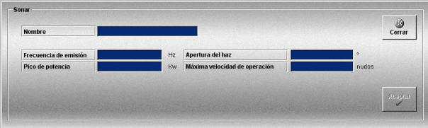

Sonar
La creación y edición de sonares se realiza mediante la siguiente ventana.

Esta ventana permite definir los sonares que podrán ser añadidos a las unidades participantes en los Ejercicios.
Para cada sonar se definen los siguientes datos:
Nombre: Nombre del sonar.
Formato: caracteres alfanuméricos.
Frecuencia de Emisión: Frecuencia de operación del sonar.
Unidades: hercios
Rango: 1 - 100
Pico de Potencia: Máxima potencia del sonar.
Unidades: kilovatios
Rango: 1 - 100
Apertura del haz: Amplitud del haz del sonar.
Unidades: grados
Rango: 1 - 90
Máxima Velocidad de Operación: Máxima velocidad.
Unidades: nudos
Rango: 1 - 100